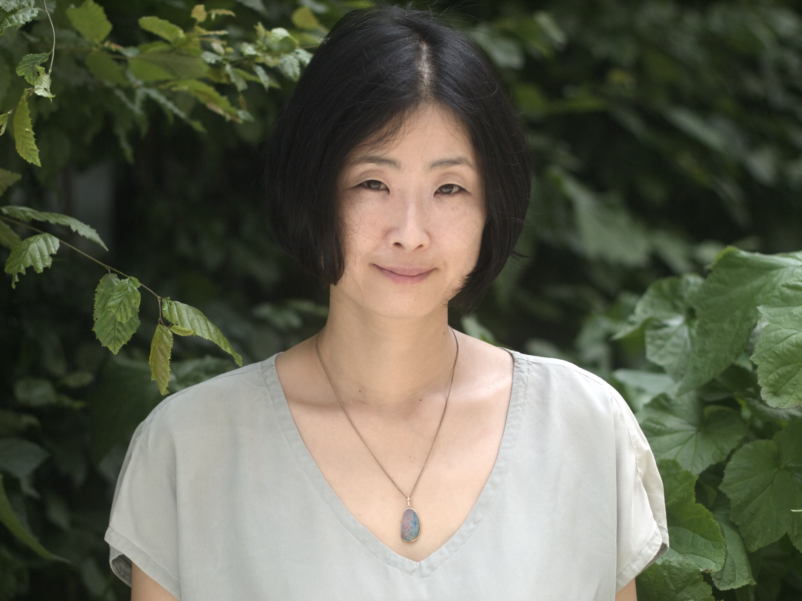

Tomomi trained in homeopathy (BSc Honours Health Sciences: Homeopathy) at University of Westminster. She has also studied Plant Science (BSc Biological Sciences: Plant Science) at Edinburgh University and is also a massage therapist; trained in ITEC Swedish massage, Holistic Massage, Indian Head Massage and Reiki. She is also trainded in RMT (Rhythmic Movement Training), working as a consultant.
Being brought up in the family of practitioners in western and eastern medicine in Japan and having spend many years in U.K. she combines her trainings in the west with the eastern philosophy to make her therapies truly holistic.
Tomomi also used to work for Neal's Yard Remedies as a visiting tutor for staff training. Tomomi currently lives in central London and loves spending her time in the Kew Garden with her children.
A fully registered member of The Society of Homeopaths (RSHom), the largest organization representing professional homeopaths in Europe and the Complementary Therapists Association (CThA), the leading organization representing complementary therapists in UK and Ireland.